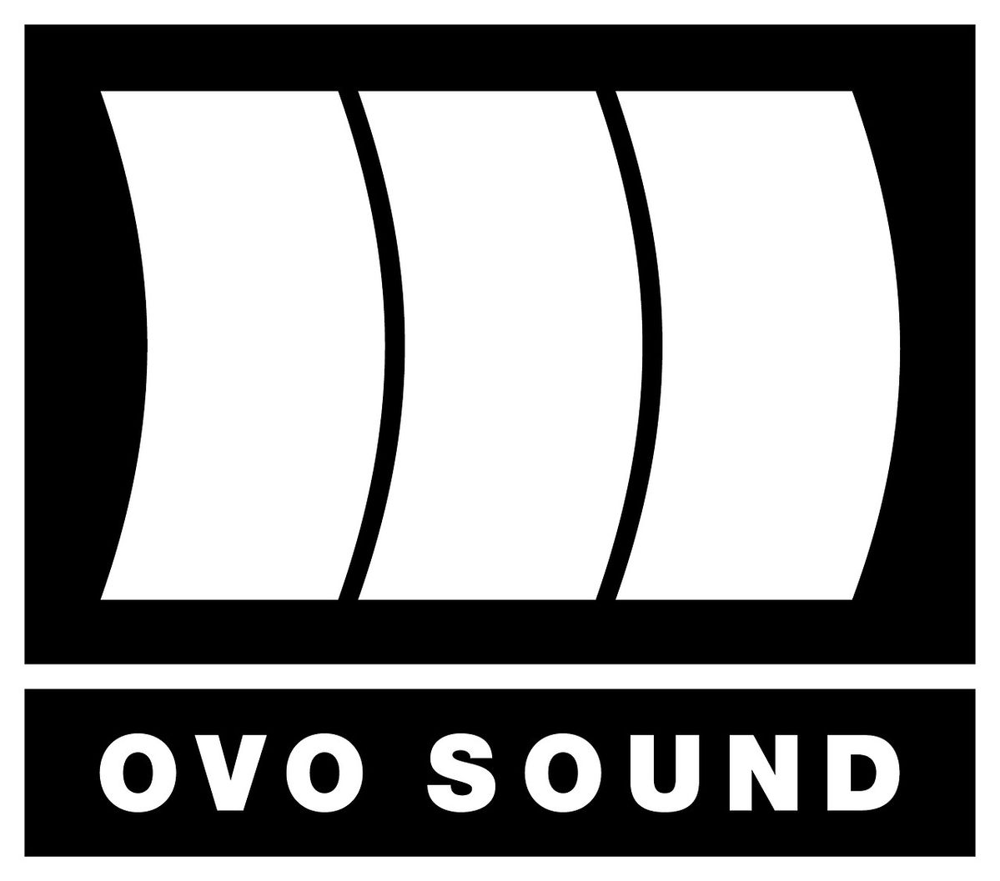
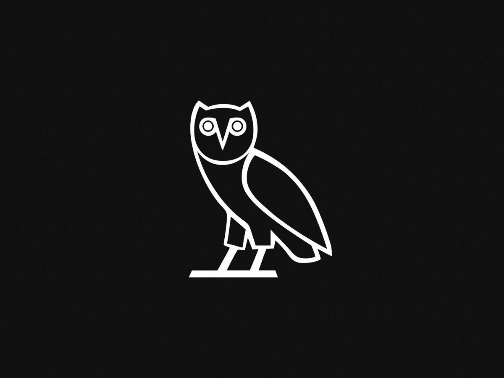

OVO Sound (short for October's Very Own) is a Canadian independent record label founded in 2012 by Drake, producer Noah "40" Shebib and Oliver El-Khatib.



In 2013, Drake was named the "Global Ambassador" of the Toronto Raptors, joining the executive committee of the NBA franchise.